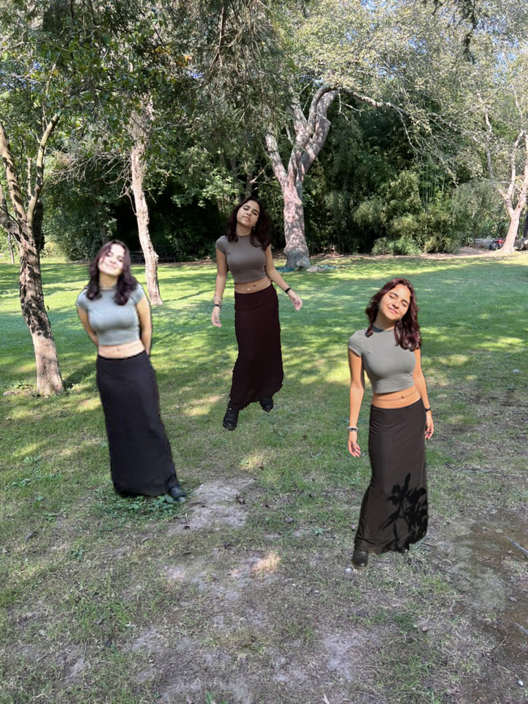
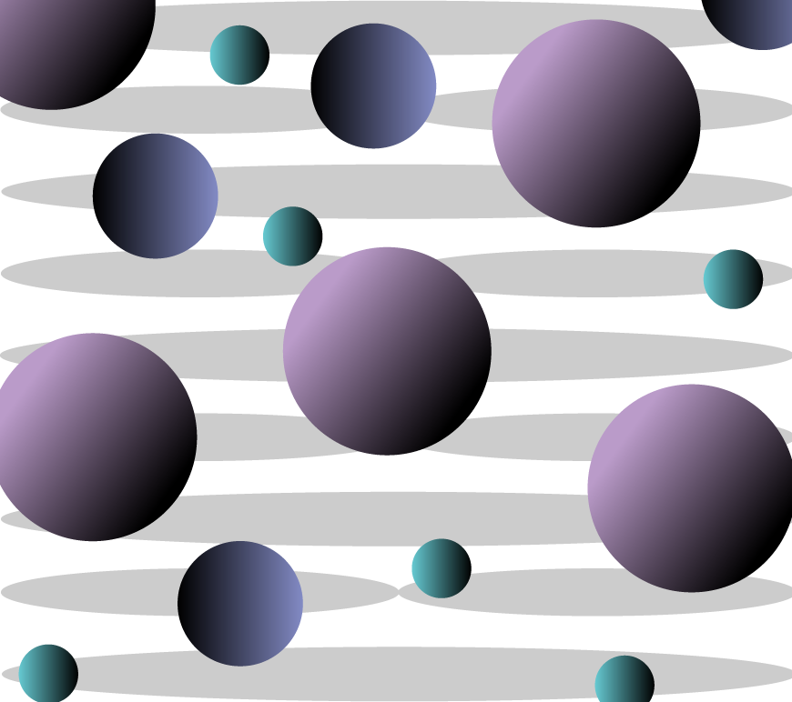

Assignment 2
In this assignment, we worked on:
- Compositing Images
- Masking
Assignment 5
This assignment made us combine multiple tools together such as:
- Compositing
- Image Editing
- Color Filters
- Typeface Manipulating
Assignment 6
This assignment let us explore adobe illustrator. We played around with:
- Shapes
- Color and Gradient
- Freeform Shapes
More Information
The following gives more information on each assignment.
- Assignment 2
- In this assignment, we worked on compositing different images together. This example shows 3 differnt images of my girlfriend in 3 different locations. I then edited her into a field.
- Assignment 5
- For this image, I grabbed an image of a robot, but a purple filter on it, and put it in front of the background. I also did some other edits to add some more color that represent AI like green, purple, and blue.
- Assignemnt 6
- There were certain moods our pieces had to follow. This one follows a somber mood, shown by the colors and placement of the shapes.